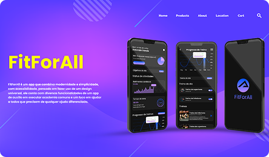
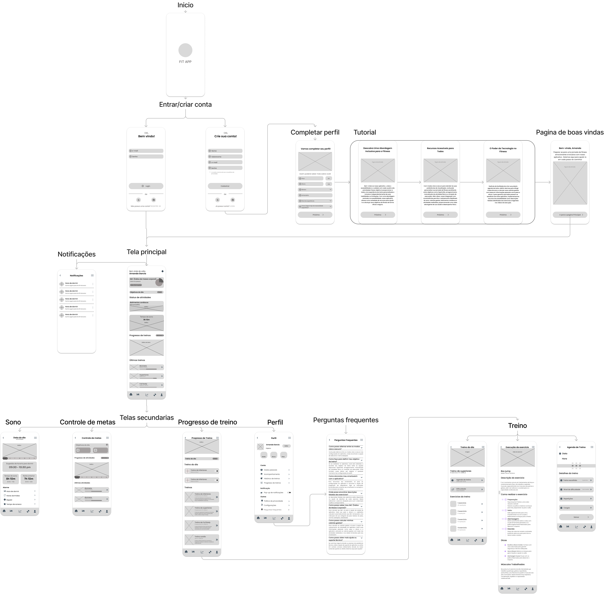
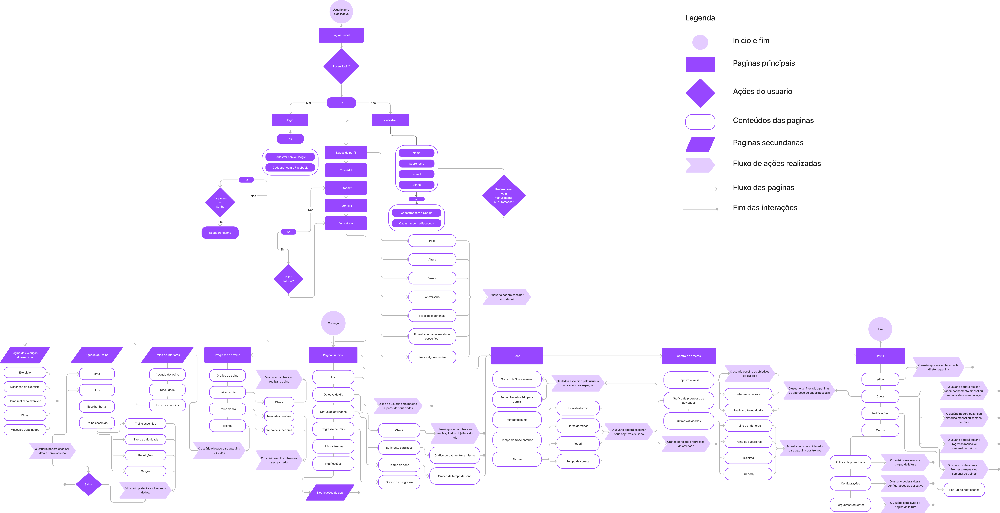
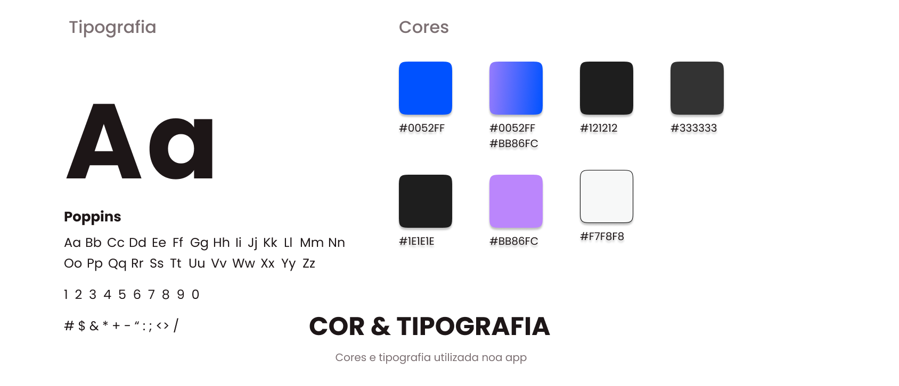
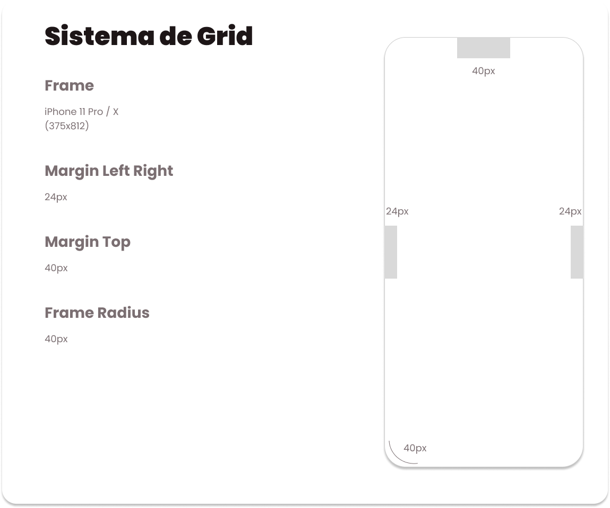
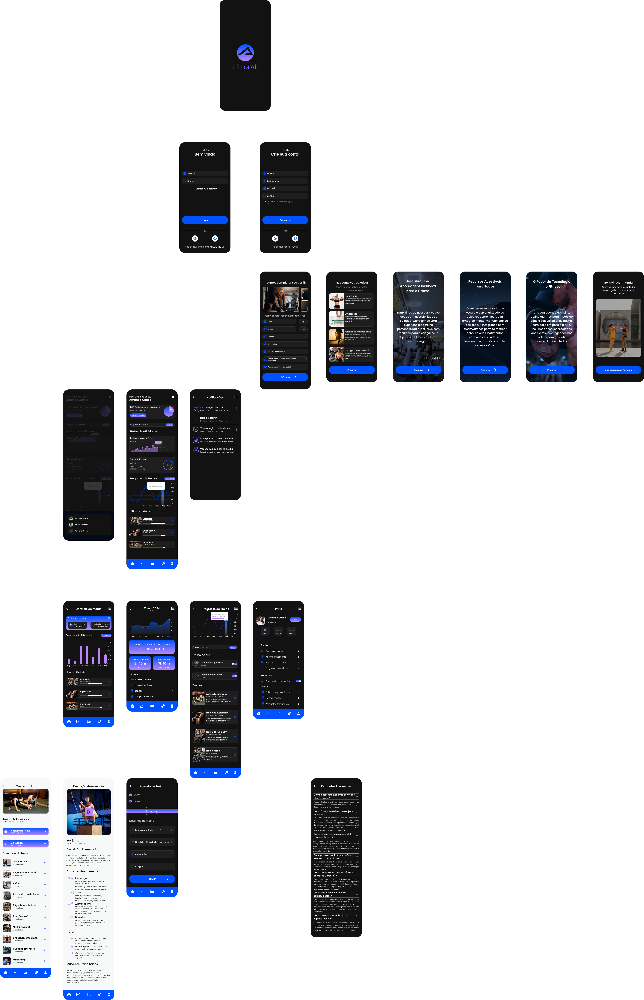

Barbara Costa
Fit For All
App de fitness pensado para corpos reais — UX/UI com foco em acessibilidade e inclusão no universo fitness.

Contexto
FitForAll é um app que combina modernidade e simplicidade, com acessibilidade, pensado em fazer uso de um design universal. Ele conta com diversas funcionalidades de um app de auxílio em execução acadêmica comum e um foco em ajudar a todos que precisem de qualquer ajuda diferenciada.
O projeto nasceu da observação de uma lacuna no mercado de apps de fitness: a maioria das soluções disponíveis ignora usuários com necessidades especiais ou que simplesmente fogem do perfil "padrão" das academias tradicionais.
Qual era o problema?
Muitos aplicativos de treino apresentam interfaces complexas e pouca personalização. O objetivo do projeto foi criar uma experiência simples e acessível para acompanhamento de atividades físicas, progresso e metas pessoais.
Interfaces complexas
Apps de fitness existentes sobrecarregam o usuário com informações e fluxos difíceis de navegar, especialmente para iniciantes.
Pouca personalização
A maioria dos apps ignora variações de perfil, capacidade física e necessidades especiais — tratando todos os usuários como iguais.
Baixa acessibilidade
Poucos apps consideram pessoas com deficiência como público relevante, criando barreiras de uso logo na primeira interação.
Como eu pensei a solução
O fluxo de usuário no FitForAll foi planejado para garantir uma navegação fluida e intuitiva desde a abertura do app até o acompanhamento de metas e dados de saúde.
Wireframes
Estrutura de navegação e funcionalidades definidas antes do visual — simples e direto ao ponto.
Fluxo de usuário
Login → cadastro → personalização de perfil → tela principal com atalhos para sono, treinos, metas e perfil.
Design System
Cor, tipografia, grid, ícones e componentes reutilizáveis para consistência e escalabilidade.
UI e refinamento
Alto contraste e tema claro/escuro, priorizando inclusão de pessoas com deficiência visual.

WIREFRAMES · ESTRUTURA DE NAVEGAÇÃO
FLUXO DE USUÁRIO · MAPEAMENTO COMPLETO


SISTEMA DE GRID · ESTRUTURA ESPACIALA solução
O FitForAll é um app de treino com interface moderna, intuitiva e acessível. Permite personalização de metas, integração com smartwatches, uso por múltiplas partes e oferece recursos para pessoas com deficiência. Conta com uma agenda de treinos, histórico de atividades e suporte contínuo por meio da seção de perguntas frequentes.

TELAS PRINCIPAIS · UI FINALDesign System Acessível
O FitForAll conta com um design acessível e visualmente claro, com alto contraste de cores e opções de tema claro e escuro. Os elementos visuais, como ícones de 24px e a fonte Poppins, garantem legibilidade e uma estética moderna — adaptando-se bem a diferentes usuários e contextos.
Navegação Personalizada
Cada etapa foi pensada para facilitar o uso e tornar a experiência personalizada e acessível — desde a personalização do perfil até os atalhos da tela principal para monitoramento de sono, treinos e metas.
Resultado
O projeto resultou em uma interface moderna e inclusiva, que coloca a acessibilidade como diferencial central — e não como um recurso secundário. A solução demonstra que é possível unir estética, usabilidade e inclusão no universo fitness.
temas de interface — claro e escuro
módulos principais: treino, sono, metas e perfil
design system completo criado do zero
O que aprendi nesse projeto
Projetar para acessibilidade desde o início — e não como um ajuste no final — muda completamente as decisões de tipografia, contraste e hierarquia visual.
Um design system bem estruturado com tokens de cor e tipografia é o que garante que um app escalável mantenha coerência em todos os estados e telas.
Mapeie o fluxo completo antes de começar a UI — cada tela faz mais sentido quando você entende de onde o usuário veio e para onde vai.